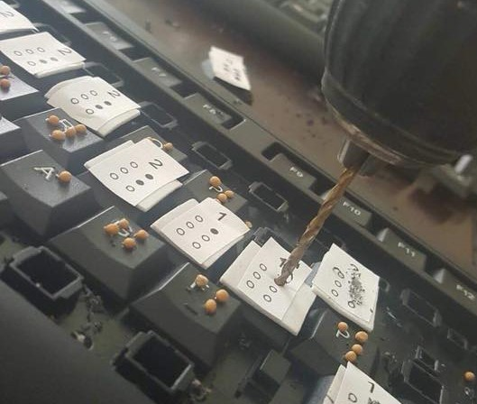

One of my favorite shows is Mr. Robot. The main character says very interesting things sometimes. Click the button to see a random quote from Elliot.

My name is Mathew Lopez, I am from Guadalajara, México and I'm computer science student at Tec de Monterrey campus Guadalajara. Before college, I went to a technical highschool, where I graduated as a Mechatronics technician. I like to listen to music and play the violin. In fact, I am part of the mariachi at my university.
When I do cool things I put them in my Github and I like to connect with people on linkedin
Click this button for a greeting
SIGHT is a personal project. I started it as my grade as Mechatronics technician. It consists on adapting hardware and software in order to help people with visual disability to make easier the process of learning how to use a computer. The first product I've made is a computer keyboard with braille. For which I decided to use mustard seeds in order to make it more ecological. Here is a picture of the making of the first prototype for the SIGHT keyboard:
At Tec de Monterrey I work at the direction department of computer science. There I design and teach programming courses for highschool students from all over the country.
Mexico es mío is a project with the mision of educate on legal culture and citizen participation around the country. Learn more at México es mío Mi work there is with the web development team.
I sometimes like to take pictures, here are some of them.